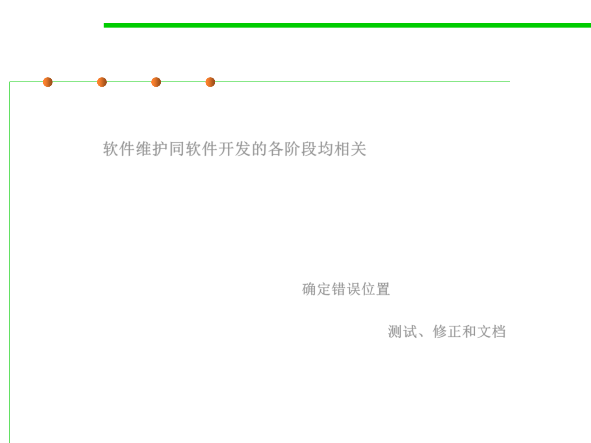

6.1 Metrics and Construction Principles for Maintainability
Operation & Maintenance Engineer
▪ Maintenance is one of the most difficult aspects of software
production because maintenance incorporates aspects of all other
phases 软件维护同软件开发的各阶段均相关
▪ A fault is reported from users and is to be handled by a
maintenance engineer.
▪ A maintenance engineer must have superb debugging skills
– The fault could lie anywhere within the product, and the original cause of
the fault might lie in the by now non-existent specifications or design
documents (bug/issue localization). 确定错误位置
– Superb diagnostic skills, testing skills and documentation skills are
required (testing, fix, and documenting changes). 测试、修正和文档